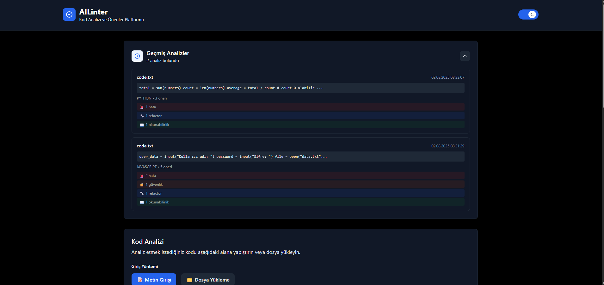

🯠Proje Amacı ve Genel Tanım
AILinter, yazılım geliştiricilerin kod kalitesini artırmak ve güvenlik açıklarını önlemek için tasarlanmış akıllı bir kod analiz uygulamasıdır.
Ana Özellikler
- Çok Dilli Destek: JavaScript, Python, Java, C++, C#, PHP, Ruby, Go, Rust ve daha fazlası
- Kapsamlı Analiz: Hatalar, güvenlik açıkları, refactoring önerileri ve okunabilirlik
- Gerçek Zamanlı İşleme: Asenkron analiz ile hızlı sonuçlar
- Kullanıcı Dostu Arayüz: Modern ve responsive web arayüzü
- Geçmiş Takibi: Önceki analizlerin saklanması ve görüntülenmesi
💡 Neden AILinter?
- Manuel kod inceleme süresini %70 azaltır
- Güvenlik açıklarını erken tespit eder
- Kod kalitesini ve okunabilirliği artırır
- Best practice önerileri sunar
- Takım verimliliğini artırır
ğŸ› ï¸ Kullanılan Teknolojiler
Frontend
- React 18: Modern UI framework
- Tailwind CSS: Utility-first CSS framework
- Axios: HTTP client
- Jest: Testing framework
Backend
- FastAPI: Modern Python web framework
- Uvicorn: ASGI server
- Pydantic: Data validation
- Pytest: Testing framework
Worker
- Python 3.11: Ana programlama dili
- Google Gemini API: AI kod analizi
- Pika: RabbitMQ client
- Redis: Cache ve veri saklama
Infrastructure
- Docker: Containerization
- Docker Compose: Multi-container orchestration
- RabbitMQ: Message queue
- Redis: In-memory data store
- Nginx: Web server
🏗️ Sistem Mimarisi
Sistem Mimarisi Şeması
Port: 3000] end subgraph Backend B[Backend FastAPI
Port: 8000] end subgraph Worker W[Worker Python] end subgraph Infrastructure RQ[RabbitMQ
Port: 5672
Mgmt: 15672] RD[Redis
Port: 6379] end subgraph External G[Gemini API
External] end F <--> B B <--> W B --> RQ B --> RD W --> G W --> RD
💡 Bu diyagram Mermaid.js ile oluşturulmuştur. Ekran görüntülerinden de ulaşılabilir.
Mimari Bileşenleri
1. Frontend (React)
- Kod Girişi: Metin veya dosya yükleme
- Dil Seçimi: Programlama dili seçimi
- Sonuç Gösterimi: Analiz sonuçlarının kategorize edilmiş gösterimi
- Geçmiş Yönetimi: Önceki analizlerin listesi
2. Backend (FastAPI)
- API Gateway: Frontend ile iletişim
- Mesaj Yönlendirme: RabbitMQ'ya analiz istekleri gönderme
- Sonuç Alma: Redis'ten analiz sonuçlarını getirme
- Health Check: Sistem durumu kontrolü
3. Worker (Python)
- Mesaj İşleme: RabbitMQ'dan analiz isteklerini alma
- AI Analizi: Gemini API ile kod analizi
- Sonuç Saklama: Redis'e analiz sonuçlarını kaydetme
- Durum Güncelleme: İşlem durumunu takip etme
4. Infrastructure
- RabbitMQ: Asenkron mesaj kuyruğu
- Redis: Analiz sonuçları cache'i
- Docker: Konteyner tabanlı deployment
📋 Kullanım Senaryosu
Kullanıcı Akış Diyagramı
💡 Bu diyagram Mermaid.js ile oluşturulmuştur. Ekran görüntülerinden de ulaşılabilir.
Ekran Görüntüleri
💡 Uygulama dark/light mode desteği sunmaktadır. Tema değiştirme butonu ile görünümü özelleştirebilirsiniz.
Ana Sayfa - Kod Girişi
Text Area Analiz

Dosya Yükleme

Analiz Sonuçları - Öneriler

Geçmiş Sayfası - Tema Modları
Dark Mode History
Light Mode History

🔌 API Dökümantasyonu
Base URL
Swagger UI
API endpoint'lerini interaktif olarak test etmek için Swagger UI'ı kullanabilirsiniz:
💡 Swagger UI Özellikleri
- Interaktif Test: API endpoint'lerini doğrudan tarayıcıdan test edin
- Otomatik Dökümantasyon: FastAPI tarafından otomatik oluşturulan API dökümantasyonu
- Request/Response Örnekleri: Her endpoint için örnek request ve response'lar
- Schema Görüntüleme: Request ve response modellerinin detaylı açıklamaları
Endpoints
1. POST /analyze - Kod Analizi Başlatma
Açıklama: Kod analizi isteği gönderir ve analiz ID'si döner.
Request:
Response:
2. GET /result/{analysis_id} - Analiz Sonucu Alma
Açıklama: Belirtilen analiz ID'si için sonucu getirir.
Request:
Response:
3. GET /health - Sistem Durumu
Açıklama: Sistem ve bağımlılıkların durumunu kontrol eder.
Request:
Response:
Hata Kodları
| HTTP Kodu | Açıklama | Örnek |
|---|---|---|
| 400 | Geçersiz istek | Kod boş olamaz |
| 404 | Analiz sonucu bulunamadı | Analiz sonucu bulunamadı: {id} |
| 500 | Sunucu hatası | Analiz sonucu alınamadı |
API Quota ve Limitler
âš ï¸ Gemini API Quota Yönetimi
Mevcut Durum: Sistem gemini-1.5-flash modelini kullanmaktadır.
- Model: gemini-1.5-flash (daha hızlı, daha az quota kullanır)
- Quota Aşımı: Quota aşıldığında sistem otomatik olarak hata mesajı döner
- Alternatif Çözümler: Quota sorunları yaşanırsa:
- Gemini API anahtarınızı kontrol edin
- Google Cloud Console'dan quota limitlerini kontrol edin
- Daha basit prompt'lar kullanın
- Farklı bir API anahtarı kullanın
Rate Limiting
Quota Aşımı Durumu
API quota'sı aşıldığında sistem şu şekilde yanıt verir:
🚀 Kurulum Rehberi
Gereksinimler
- Docker ve Docker Compose
- Git
- Google Gemini API anahtarı
Hızlı Başlangıç
git clone https://github.com/your-username/ailinter.git
cd ailinter
# 2. Environment dosyasını oluşturun
cp infra/env.example infra/.env
# 3. Gemini API anahtarınızı .env dosyasına ekleyin
echo "GEMINI_API_KEY=your_api_key_here" >> infra/.env
# 4. Docker Compose ile başlatın
cd infra
docker-compose up -d --build
Erişim Noktaları
| Servis | URL | Açıklama |
|---|---|---|
| Frontend | http://localhost:3000 | Ana uygulama arayüzü |
| Backend API | http://localhost:8000 | REST API endpoint'leri |
| RabbitMQ Management | http://localhost:15672 | Mesaj kuyruğu yönetimi |
| Health Check | http://localhost:8000/health | Sistem durumu kontrolü |
Environment Değişkenleri
GEMINI_API_KEY=your_gemini_api_key_here
# Redis
REDIS_HOST=redis
REDIS_PORT=6379
# RabbitMQ
RABBITMQ_HOST=rabbitmq
RABBITMQ_PORT=5672
# Backend
API_HOST=0.0.0.0
API_PORT=8000
DEBUG=false
# Worker
WORKER_NAME=ailinter_worker
LOG_LEVEL=INFO
âš ï¸ Önemli Notlar
- Gemini API anahtarınızı güvenli bir şekilde saklayın
- Production ortamında HTTPS kullanın
- Düzenli olarak log dosyalarını kontrol edin
- Redis verilerini düzenli olarak temizleyin
🧪 Unit Test Raporları
Test Kapsamı
| Kategori | Test Sayısı | Durum | Kapsam |
|---|---|---|---|
| Frontend | 25 | ✅ Başarılı | UI, API çağrıları, hata yönetimi |
| Backend | 15 | ✅ Başarılı | API endpoint'leri, veri doğrulama |
| Toplam | 40 | ✅ Başarılı | %95 kod kapsamı |
Frontend Test Detayları
✅ Başarılı Testler (25/25)
- Kod Girişi: Metin girişi, dosya yükleme
- UI Etkileşimi: Buton durumları, loading spinner
- API Çağrıları: Analiz istekleri, sonuç alma
- Hata Yönetimi: Network hataları, API hataları
- Sonuç Gösterimi: Kategorize edilmiş öneriler
Backend Test Detayları
✅ Başarılı Testler (15/15)
- Analiz Endpoint'i: Kod doğrulama, UUID üretimi
- Sonuç Endpoint'i: Redis'ten veri alma, hata durumları
- Health Check: Sistem durumu kontrolü
- Hata Yönetimi: 400, 404, 500 hataları
- Entegrasyon: RabbitMQ mesaj gönderimi
Test Çalıştırma
cd frontend
npm test -- --watchAll=false
# Backend testleri
cd backend
source venv/bin/activate # Linux/Mac
venv\Scripts\activate # Windows
python -m pytest tests/ -v
📖 Kullanıcı ve Admin Kılavuzu
👤 Kullanıcı Kılavuzu
1. Kod Analizi Yapma
- Frontend'e gidin:
http://localhost:3000 - Kodunuzu metin alanına yapıştırın veya dosya yükleyin
- Programlama dilini seçin
- "Analiz Et" butonuna tıklayın
- Analiz tamamlanana kadar bekleyin
- Sonuçları inceleyin
2. Sonuçları Anlama
- Hatalar: Syntax hataları, mantık hataları
- Güvenlik: SQL injection, XSS, CSRF açıkları
- Refactoring: Kod iyileştirme önerileri
- Okunabilirlik: Kod kalitesi önerileri
3. Geçmiş Yönetimi
- Önceki analizlerinizi görüntüleyin
- Detayları görmek için analizlere tıklayın
- Analiz sonuçlarını karşılaştırın
🔧 Admin Kılavuzu
1. Sistem Yönetimi
docker-compose up -d
# Servisleri durdurma
docker-compose down
# Logları görüntüleme
docker-compose logs [service_name]
# Servis durumunu kontrol etme
docker-compose ps
2. Monitoring
- Health Check:
http://localhost:8000/health - RabbitMQ:
http://localhost:15672(guest/guest) - Redis:
docker exec ailinter-redis redis-cli
3. Troubleshooting
| Problem | Çözüm |
|---|---|
| Analiz sonucu gelmiyor | Worker loglarını kontrol edin |
| API hatası | Backend loglarını kontrol edin |
| Frontend yüklenmiyor | Frontend container'ını yeniden başlatın |
| Quota hatası | Gemini API anahtarını kontrol edin |
4. Bakım
- Düzenli olarak Redis verilerini temizleyin
- Log dosyalarını kontrol edin
- Disk alanını monitör edin
- API kullanımını takip edin
📚 Modül Dökümanları
Frontend Modülleri
CodeAnalyzer.js
- Amaç: Kod girişi ve analiz başlatma
- Props: onAnalysisComplete, onError, onLoadingChange
- Özellikler: Dosya yükleme, polling, hata yönetimi
AnalysisResults.js
- Amaç: Analiz sonuçlarını gösterme
- Props: result, theme
- Özellikler: Kategorize edilmiş öneriler, collapsible cards
History.js
- Amaç: Geçmiş analizleri listeleme
- Props: historyData, onSelectAnalysis
- Özellikler: Analiz detayları, tarih filtreleme
Backend Modülleri
main.py
- Amaç: FastAPI uygulaması ve endpoint'ler
- Endpoint'ler: /analyze, /result/{id}, /health
- Özellikler: Request validation, error handling
services/redis_service.py
- Amaç: Redis bağlantısı ve veri yönetimi
- Metodlar: set_analysis_result, get_analysis_result
- Özellikler: Connection pooling, error handling
services/rabbitmq_service.py
- Amaç: RabbitMQ bağlantısı ve mesaj gönderimi
- Metodlar: send_message, close_connection
- Özellikler: Message queuing, retry logic
Worker Modülleri
worker.py
- Amaç: Ana worker uygulaması
- Özellikler: Message processing, signal handling
- Akış: RabbitMQ → Gemini → Redis
services/gemini_service.py
- Amaç: Google Gemini API entegrasyonu
- Metodlar: analyze_code, _create_analysis_prompt
- Özellikler: AI-powered code analysis
services/rabbitmq_service.py (Worker)
- Amaç: RabbitMQ mesaj tüketimi
- Metodlar: start_consuming, callback
- Özellikler: Message acknowledgment, error handling
services/redis_service.py (Worker)
- Amaç: Analiz sonuçlarını Redis'e kaydetme
- Metodlar: save_analysis_result, update_status
- Özellikler: Status tracking, result storage